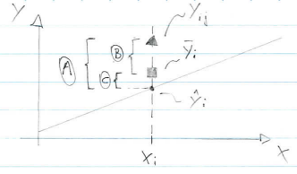
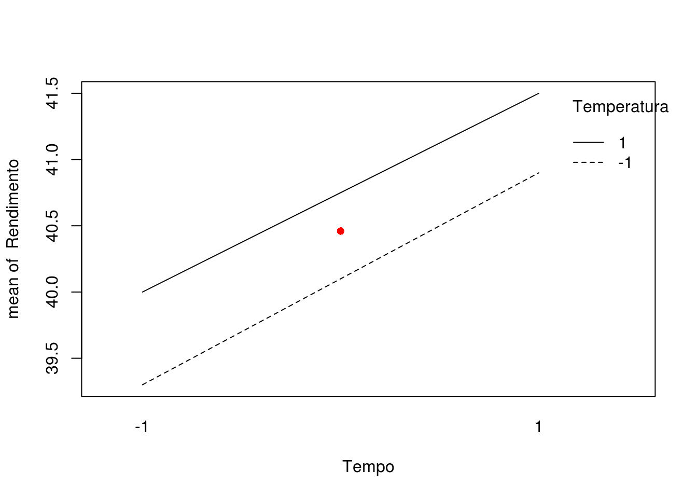
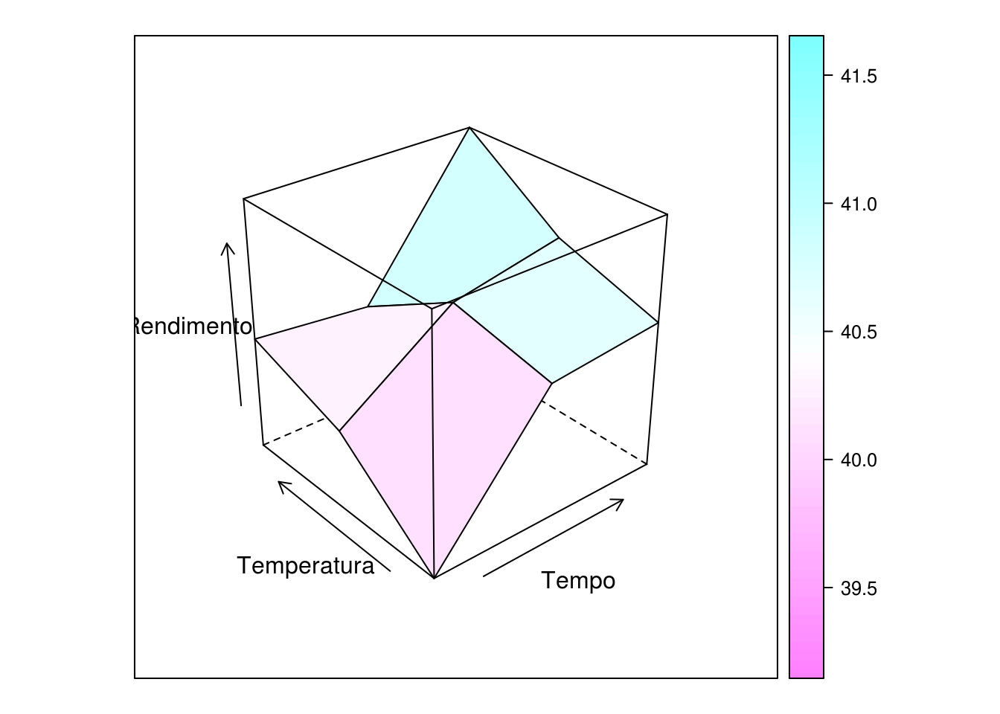
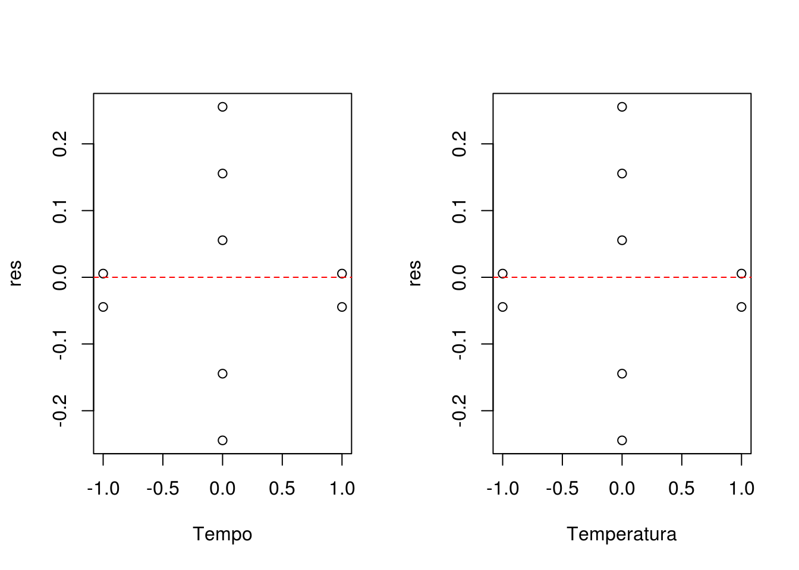
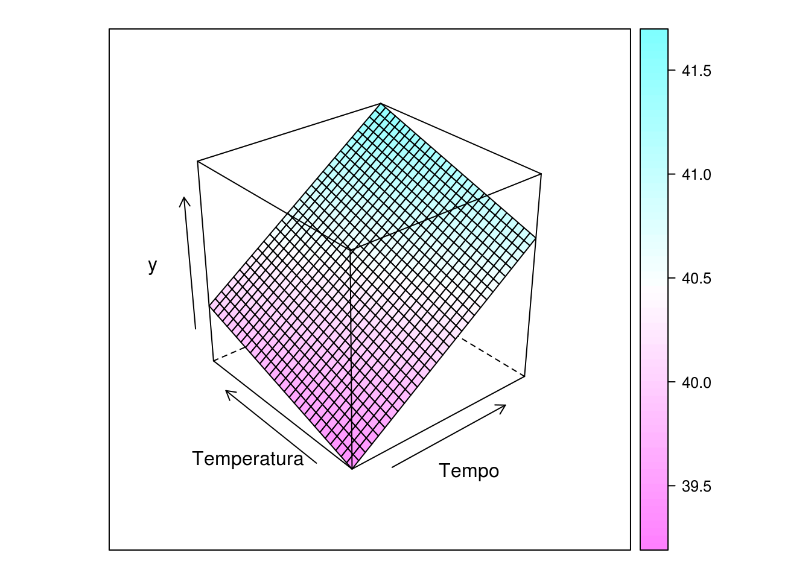
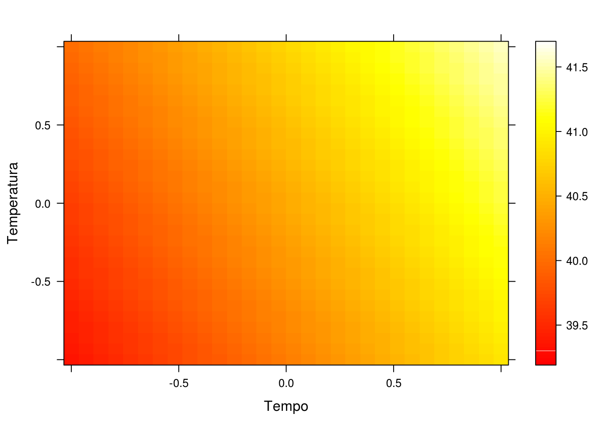
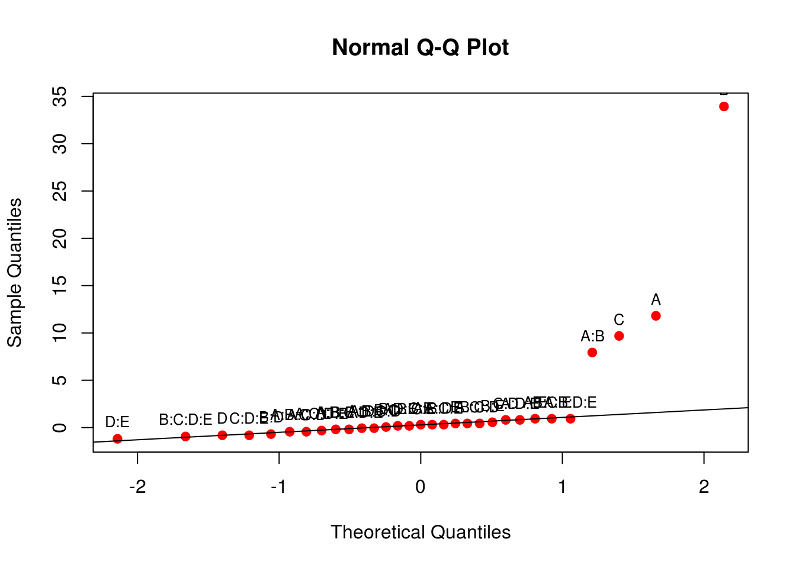
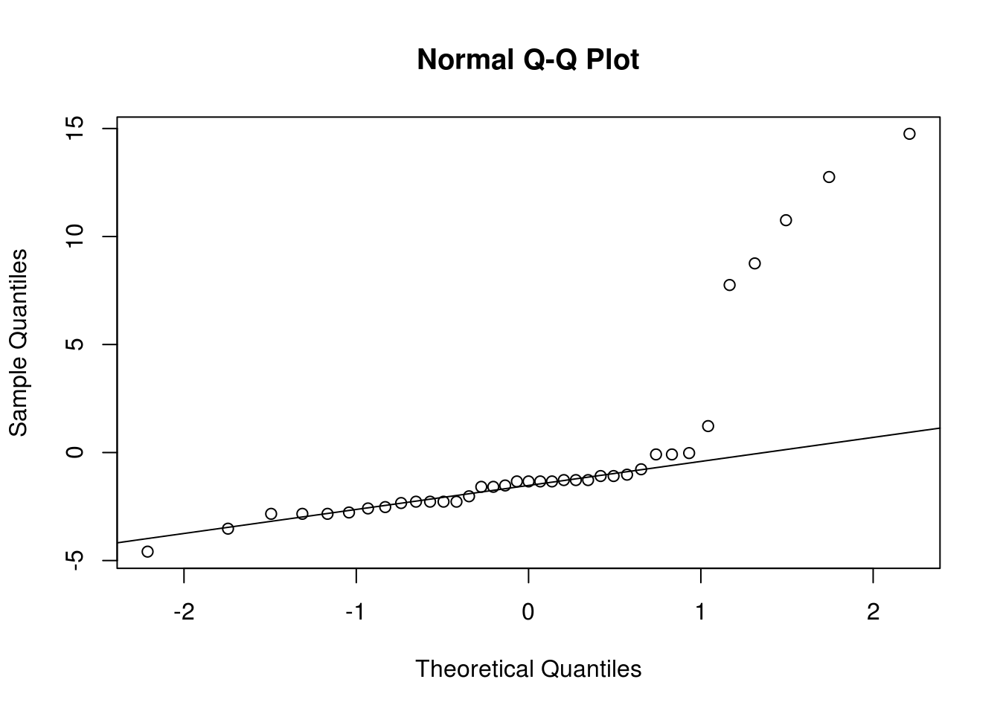
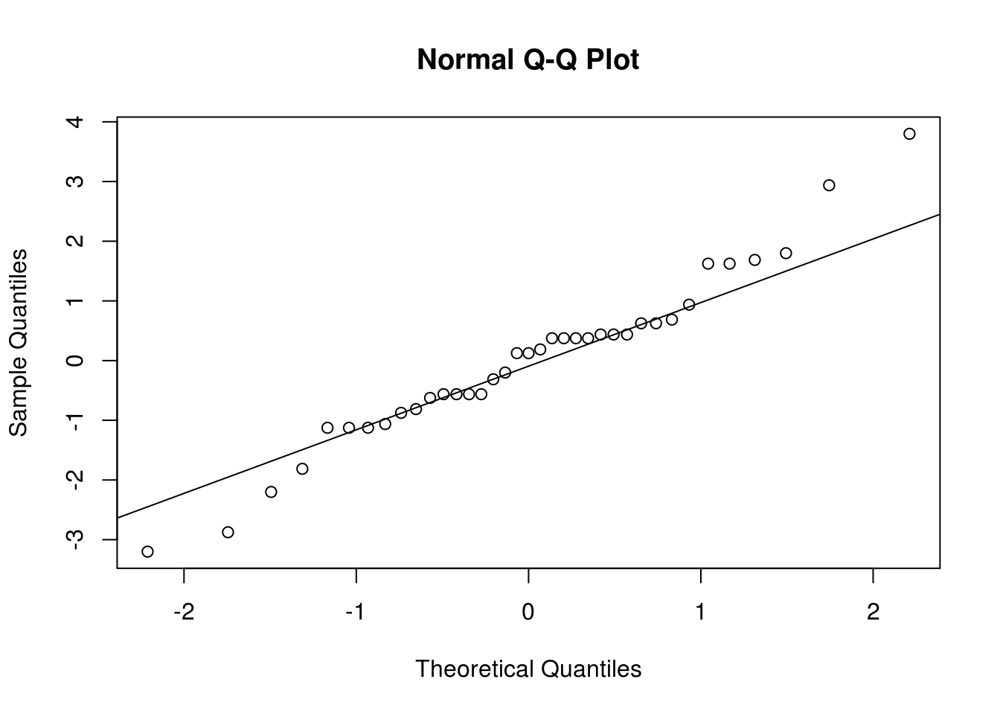

Adição de pontos centrais em planejamentos \(2^k\)
Introdução
Nos experimentos \(2^k\), pelo fato de usarmos apenas 2 níveis de cada fator, estamos automaticamente assumindo que a relação de dependência da resposta para os fatores é linear. Existe então uma preocupação sobre essa suposição de linearidade.
Podemos notar que, ao se adicionar um termo de interação à um modelo de efeitos principais de primeira ordem, resultando em
- \[ y = \beta_0 + \sum_{j=1}^{k} \beta_{j} x_j + \mathop{\sum\sum}\limits_{i < j} \beta_{ij} x_i x_j + \epsilon \]
então temos um modelo capaz de representar uma curvatura na variável resposta. Essa curvatura é resultado da “torção” no plano induzida pelos termos da interação \(\beta_{ij} x_i x_j\).
No entanto, podem existir situações onde a curvatura na variável resposta não é modelada adequadamente pela equação (1) acima. Nestes casos, devemos considerar um modelo com
- \[ y = \beta_0 + \sum_{j=1}^{k} \beta_{j} x_j + \mathop{\sum\sum}\limits_{i < j} \beta_{ij} x_i x_j + \sum_{j=1}^{k} \beta_{jj} x_{j}^{2} + \epsilon \]
onde \(\beta_{jj}\) representa efeitos quadráticos ou de segunda ordem. Este modelo também é chamado de superfície de resposta de segunda ordem.
Uma forma de testar se existe curvatura (“proteção contra curvatura”) é através da adição de pontos centrais ao planejamento \(2^k\). Como o próprio nome sugere, esses pontos serão os valores (0, 0) na escala codificada dos níveis (-1, 1). Portanto, o processo consiste em realizar \(n_c\) réplicas no ponto \(x_i = 0\), (\(i = 1, 2, \ldots, k\)). Uma razão importante para adicionar as corridas replicadas no centro do planejamento, é que pontos centrais não interferem nas estimativas dos efeitos de planejamentos \(2^k\). Quando adicionamos os pontos centrais, consideramos que os \(k\) fatores são quantitativos.
Para ilustrar a abordagem, considere um experimento \(2^2\) com uma observação em cada um dos pontos fatoriais: (-,-), (+,-), (-,+), (+,+), e \(n_c\) observações nos pontos centrais (0,0). Seja \(\bar{y}_F\) a média das quatro corridas nos quatro pontos fatoriais, e \(\bar{y}_C\) a média das \(n_C\) corridas no ponto central. Se a diferença \(\bar{y}_F - \bar{y}_C\) for pequena, os pontos centrais estarão no plano ou próximo do plano passando através dos pontos fatoriais, não havendo portanto curvatura. Por outro lado, se \(\bar{y}_F - \bar{y}_C\) for grande, então há indícios de que existe curvatura. A soma de quadrados da curvatura, com um grau de liberdade é dada por
- \[ \begin{align} SQ_{curv} &= \left( \frac{\bar{y}_F - \bar{y}_C}{\sqrt{\frac{1}{n_F} + \frac{1}{n_C}}} \right)^2 \\ \\ &= \frac{n_F n_C (\bar{y}_F - \bar{y}_C)^2}{n_F + n_C} \end{align} \]
onde \(n_F\) é o número de pontos do planejamento fatorial. Essa soma de quadrados deve ser comparada com a média quadrática do erro (como existe um grau de liberdade, então \(SQ_{curv} = MQ_{curv}\)) para testar a curvatura. Note que quando a equação (3) acima for dividida por \(\hat{\sigma}^2 = MQ_{Res}\), o resultado será similar ao quadrado da estatística \(t\) usada para comparar duas médias, o que equivale a um teste F.
Mais especificamente, quando pontos centrais são adicionados à um experimento \(2^k\), então o teste para curvatura (usando a equação acima) realmente testa as hipóteses
\[ \begin{align} \text{H}_0 &: \sum_{j=1}^{k} \beta_{jj} = 0 \\ \text{H}_1 &: \sum_{j=1}^{k} \beta_{jj} \neq 0 \end{align} \]
Além disso, se os pontos fatoriais do planejamento não forem replicados, poderemos usar os \(n_C\) pontos centrais para construir uma estimativa de erro com \(n_C - 1\) graus de liberdade (chamado de “erro puro”).
Com a adição de pontos centrais é possível ter uma estimativa de erro (variância) pura, ou seja, que independe do modelo especificado. A idéia básica é decompor a soma de quadrados dos resíduos em soma de quadrado pura e soma de quadrados devido à falta de ajuste.
O teste da falta de ajuste é importante para situar-se na região experimental. No caso de não haver falta de ajuste entende-se que o modelo de primeira ordem (1) que estima efeitos principais e interações apenas, é adequado para descrever o fenômeno. Por outro lado, a existência de falta de ajuste indica que para pelo menos um dos \(k\) fatores existe uma relação não linear e que este fator está perto da sua região experimental ótima (isso será melhor explorado na metodologia de superfície de resposta).
Quando isso acontecer, os próximos experimentos devem ser planejados de forma a pertimitir estimação de termos quadráticos para capturar essa não linearidade da relação \(y \sim x_1 + x_2 + \cdots + x_k\) bem como permitir encontrar pontos de ótimo da relação, que é o nosso objetivo principal.
Sobre a falta de ajuste em modelos lineares
De maneira geral, para verificar se o modelo linear é adequado para descrever a relação entre \(X\) e \(Y\), devemos realizar um teste para falta de ajuste.
A falta de ajuste pode ser verificada quando existem medições repetidas de \(Y\) para um certo nível de \(X\). Por exemplo, se \(X_i\) for considerada em uma escala discreta com \(k\) níveis (\(i = 1, 2, \ldots, k\)), podemos observar \(n_i\) repetições de \(Y_{ij}\) (\(j = 1, 2, \ldots, n_i\)).
No caso específico de um experimento fatorial \(2^2\), por exemplo, temos o fator \(A\) com 2 níveis, \(B\) com 2 níveis, onde cada nível (\(-1\) e \(1\)) são os pontos na escala discreta. Considere que não há repetições, então existem apenas quatro observações deste experimento fatorial. Com a adição de um ponto central (\(0,0\)), geralmente temos \(n_C\) repetições, que seriam as medidas repetidas para este ponto.
Quando existem repetições, é possível calcular o erro puro, ou seja, o desvio de cada observação \(Y_{ij}\), com relação à média do nível \(i\), \(\bar{y}_i\).
Novamente fazendo associação com um experimento fatorial com ponto central, nós podemos usar as medidas repetidas do ponto central para estimar o erro experimental. Note que esta é uma grande vantagem da adição de pontos centrais, pois mesmo em experimentos fatorias onde não há repetições para os pontos dos fatores, se houver medidas repetidas apenas no ponto central, podemos ter uma estimativa do erro.
Note que o erro puro não depende de nenhum modelo, pois mede apenas os desvios das observações em relação à média. Por esse motivo, ele pode ser comparado com os desvios de um modelo de regressão para verificação da qualidade do ajuste. A ideia é que se o modelo linear é adequado, então os desvios das observações em relação à média (erro puro) devem ser próximos dos desvios das observações em relação ao modelo ajustado.
Se não houverem repetições nos níveis de \(X_i\) (ou no ponto central), então a suposição de linearidade deve ser verificada através dos resíduos do modelo apenas. (Mesmo com a realização de um teste de falta de ajuste, os resíduos sempre devem ser verificados).
Para representar o erro puro e a falta de ajuste, podemos realizar a decomposição da soma de quadrados dos resíduos, quando existem repetições para \(X_i\), em

\[ \begin{align} A &= B + C \\ (y_{ij} - \hat{y}_i) &= (y_{ij} - \bar{y}_i) + (\bar{y}_i - \hat{y}_i) \\ \text{Resíduo} &= \text{Erro puro} + \text{Desvio de regressão (falta de ajuste)} \end{align} \]
Fazendo a soma de quadrados destes termos, temos
\[ \begin{align} \sum_{i=1}^{k}\sum_{j=1}^{n_i} (y_{ij} - \hat{y}_i)^2 &= \sum_{i=1}^{k}\sum_{j=1}^{n_i} (y_{ij} - \bar{y}_i)^2 + \sum_{i=1}^{k}\sum_{j=1}^{n_i} (\bar{y}_i - \hat{y}_i)^2 \\ &= \sum_{i=1}^{k}\sum_{j=1}^{n_i} (y_{ij} - \bar{y}_i)^2 + \sum_{i=1}^{k} n_i (\bar{y}_i - \hat{y}_i)^2 \end{align} \]
Com isso, podemos ver que um modelo “bom” (onde a suposição de linearidade é adequada), será aquele em que a falta de ajuste (ou desvio de regressão), será próxima de zero, pois em um modelo correto, esperamos que
\[ \hat{y}_i = \bar{y}_i \]
Com isso, se o modelo for correto, então \(QMRes\) provê uma estimativa não viesada para \(\sigma^2\). Se o modelo for incorreto, então \(QMRes\) será uma estimativa viesada para \(\sigma^2\), pois haverá um desvio sistemático (viés) entre o modelo correto (desconhecido), e o modelo incorreto utilizado:
\[ \sigma^2 + \text{B}_i \]
onde
\[ \text{B}_i = \text{E}(Y_i) - \text{E}(\hat{Y}_i) \]
é o viés. Usar o modelo incorreto, levará, portanto, à estimativas viciadas das variâncias dos estimadores, e por consequência, os intervalos de confiança e os testes de hipótese serão incorretos.
Faz sentido então, testarmos as hipóteses
\[ \begin{align} \text{H}_0 &: \text{o modelo é adequado (não há falta de ajuste)} \\ \text{H}_1 &: \text{o modelo não é adequado (há falta de ajuste)} \end{align} \]
com base na \(SQep\) (soma de quadrados do erro puro) e \(SQlof\) (soma de quadrados da falta de ajuste). Como já vimos, a \(SQep\) é calculada como
\[ SQep = \sum_{i=1}^{k}\sum_{j=1}^{n_i} (y_{ij} - \bar{y}_i)^2 \]
com \((n-k)\) graus de liberdade, pois são necessárias \(k\) médias para o cálculo. No caso do experimento fatorial \(2^2\) com \(n_C\) pontos centrais, esta soma de quadrados é
\[ SQep = \sum_{i=1}^{n_C} (y_{i} - \bar{y}_C)^2 \]
onde \(\bar{y}_C\) é a média dos pontos centrais. Como aqui só há uma média, então existem \(n_C - 1\) graus de liberdade.
Como vimos na equação (3) acima, a soma de quadrados da curvatura, ou da falta de ajuste, é
\[ SQ_{curv} = \frac{n_F n_C (\bar{y}_F - \bar{y}_C)^2}{n_F + n_C} \]
com um grau de liberdade. Com isso, a hipótese pode ser testada com
\[ \frac{SQcurv/1}{SQep/(n_C - 1)} = \frac{MQcurv}{MQep} \]
que, sob \(H_0\), possui distribuição \(F\) com \(1\), e \(n_C - 1\) graus de liberdade.
Exemplos
Fatorial \(2^2\) + 5 pontos centrais
##----------------------------------------------------------------------
## Importação e definições
url <- "http://www.leg.ufpr.br/~fernandomayer/data/montgomery_14-6.csv"
dados <- read.csv(url)
str(dados)
# 'data.frame': 9 obs. of 3 variables:
# $ Tempo : int -1 1 -1 1 0 0 0 0 0
# $ Temperatura: int -1 -1 1 1 0 0 0 0 0
# $ Rendimento : num 39.3 40.9 40 41.5 40.3 40.5 40.7 40.2 40.6
## Definições
k <- 2
a <- b <- 2
r <- 1
n <- r*2^k
##----------------------------------------------------------------------
## Análise exploratória
with(subset(dados, Tempo != 0),
interaction.plot(Tempo, Temperatura, Rendimento))
with(subset(dados, Tempo == 0),
points(x = 1.5, y = mean(Rendimento), pch = 16, col = 2))
wireframe(Rendimento ~ Tempo + Temperatura, data = dados, drape = TRUE)
##----------------------------------------------------------------------
## Montando a tabela de sinais
tab <- model.matrix(~ Tempo * Temperatura, data = dados)
tab
# (Intercept) Tempo Temperatura Tempo:Temperatura
# 1 1 -1 -1 1
# 2 1 1 -1 -1
# 3 1 -1 1 -1
# 4 1 1 1 1
# 5 1 0 0 0
# 6 1 0 0 0
# 7 1 0 0 0
# 8 1 0 0 0
# 9 1 0 0 0
# attr(,"assign")
# [1] 0 1 2 3
##----------------------------------------------------------------------
## Cálculo dos contrastes e efeitos
## Contrastes
(contr <- t(tab[, -1]) %*% dados$Rendimento)
# [,1]
# Tempo 3.1
# Temperatura 1.3
# Tempo:Temperatura -0.1
## Efeitos
(ef <- contr/(r*2^(k-1)))
# [,1]
# Tempo 1.55
# Temperatura 0.65
# Tempo:Temperatura -0.05Note que os pontos centrais, por serem definidos no ponto (0,0) não são considerados efeitos, e por isso não são estimados.
O teste manual para falta de ajuste pode ser feito da seguinte forma:
## Separa os pontos fatoriais dos centrais e calcula tamanho das
## amostras
yf <- dados$Rendimento[dados$Tempo != 0] # y dos pontos fatoriais
yc <- dados$Rendimento[dados$Tempo == 0] # y do ponto central (0,0)
(nf <- length(yf))
# [1] 4
(nc <- length(yc))
# [1] 5
## Médias
c(mean(yf), mean(yc))
# [1] 40.425 40.460
diff(c(mean(yf), mean(yc)))
# [1] 0.035A SQ do erro puro mede a distância das observações do ponto central em relação à sua média
(SQpuro <- sum((yc - mean(yc))^2))
# [1] 0.172Como só existe uma média, então essa SQ está associada à \(n_c - 1\) graus de liberdade. Dessa forma, podemos obter uma estimativa do “erro puro”, ou seja, independente do modelo adotado
(MQpuro <- SQpuro/(nc-1))
# [1] 0.043Agora podemos calcular a SQ devido à curvatura, ou à falta de ajuste, conforme mostrado anteriormente
## lof = lack of fit
(SQlof <- (nf * nc * (mean(yc) - mean(yf))^2)/(nf + nc))
# [1] 0.002722222que possui apneas um grau de liberdade (portanto SQlof = MQlof). Como vimos, o teste F para a falta de ajuste vem da razão entre MQlof e MQpuro
(Flof <- SQlof/MQpuro)
# [1] 0.06330749
## Calculando o p-valor associado, temos
pf(Flof, 1, nc - 1, lower.tail = FALSE)
# [1] 0.8137408Ou seja, não rejeitamos a hipótese de que o modelo linear é adequado (ou de que não existe falta de ajuste).
Fazendo através das funções do R, podemos adotar a seguinte abordagem:
## Modelo desconsiderando os pontos centrais
m0 <- lm(Rendimento ~ Tempo * Temperatura, data = dados,
subset = Tempo != 0)
anova(m0)
# Warning in anova.lm(m0): ANOVA F-tests on an essentially perfect fit are
# unreliable
# Analysis of Variance Table
#
# Response: Rendimento
# Df Sum Sq Mean Sq F value Pr(>F)
# Tempo 1 2.4025 2.4025
# Temperatura 1 0.4225 0.4225
# Tempo:Temperatura 1 0.0025 0.0025
# Residuals 0 0.0000Note que dessa forma não temos uma estimativa do erro.
## Modelo considerando os pontos centrais
m1 <- lm(Rendimento ~ Tempo * Temperatura, data = dados)
anova(m1)
# Analysis of Variance Table
#
# Response: Rendimento
# Df Sum Sq Mean Sq F value Pr(>F)
# Tempo 1 2.40250 2.40250 68.7520 0.0004166 ***
# Temperatura 1 0.42250 0.42250 12.0906 0.0177127 *
# Tempo:Temperatura 1 0.00250 0.00250 0.0715 0.7997870
# Residuals 5 0.17472 0.03494
# ---
# Signif. codes: 0 '***' 0.001 '**' 0.01 '*' 0.05 '.' 0.1 ' ' 1Mesmo sem repetição dos fatores, obtemos uma estimativa do erro devido às repetições do ponto central. Mas note que essa estimativa pode ser viesada pois não consideramos um termo quadrático no modelo para incorporar a falta de ajuste. Caso não exista falta de ajuste, ou seja o modelo linear é adequado, então esta estimativa está correta (não viesada). Mas se o modelo linear não for adequado a estimativa será viesada. Para incluir um termo que define a falta de ajuste podemos criar uma nova variável indicadora para os pontos fatoriais e os pontos centrais. Obtemos esse termo elevendo qualquer coluna de fator ao quadrado:
dados$lof <- dados$Tempo^2lof aqui significa “lack of fit”. Note que essa coluna somente indica quais observações são dos eixos fatoriais e quais são do ponto central
dados
# Tempo Temperatura Rendimento lof
# 1 -1 -1 39.3 1
# 2 1 -1 40.9 1
# 3 -1 1 40.0 1
# 4 1 1 41.5 1
# 5 0 0 40.3 0
# 6 0 0 40.5 0
# 7 0 0 40.7 0
# 8 0 0 40.2 0
# 9 0 0 40.6 0Isso irá fazer com que a média do plano fatorial ({y}_f) seja contrastada com a média do plano dos pontos centrais ({y}_c). Agora podemos ajustar um novo modelo com esse termo
m2 <- lm(Rendimento ~ Tempo * Temperatura + lof, data = dados)
anova(m2)
# Analysis of Variance Table
#
# Response: Rendimento
# Df Sum Sq Mean Sq F value Pr(>F)
# Tempo 1 2.40250 2.40250 55.8721 0.001713 **
# Temperatura 1 0.42250 0.42250 9.8256 0.035030 *
# lof 1 0.00272 0.00272 0.0633 0.813741
# Tempo:Temperatura 1 0.00250 0.00250 0.0581 0.821316
# Residuals 4 0.17200 0.04300
# ---
# Signif. codes: 0 '***' 0.001 '**' 0.01 '*' 0.05 '.' 0.1 ' ' 1O ideal é que a SQlof seja a última linha do quadro de ANOVA, porém, como nesses modelos existe ortogonalidade entre os efeitos, isso deixa de ter importância. Note que o teste F para SQlof está de fato testando se esse termo é importante, ou em outras palavras, se a diferença entre as médias dos eixos dos fatores é significativa. Um TRV entre os modelos com e sem lof mostra o mesmo resultado.
anova(m2, m1)
# Analysis of Variance Table
#
# Model 1: Rendimento ~ Tempo * Temperatura + lof
# Model 2: Rendimento ~ Tempo * Temperatura
# Res.Df RSS Df Sum of Sq F Pr(>F)
# 1 4 0.17200
# 2 5 0.17472 -1 -0.0027222 0.0633 0.8137Nesse caso, não rejeitamos a hipótese de que essas médias são iguas e concluimos que não há falta de ajuste, e que o modelo linear é adequado. Assim, podemos redefinir o modelo sem esse termo
mf <- update(m2, . ~ . -lof)
anova(mf)
# Analysis of Variance Table
#
# Response: Rendimento
# Df Sum Sq Mean Sq F value Pr(>F)
# Tempo 1 2.40250 2.40250 68.7520 0.0004166 ***
# Temperatura 1 0.42250 0.42250 12.0906 0.0177127 *
# Tempo:Temperatura 1 0.00250 0.00250 0.0715 0.7997870
# Residuals 5 0.17472 0.03494
# ---
# Signif. codes: 0 '***' 0.001 '**' 0.01 '*' 0.05 '.' 0.1 ' ' 1Como a interação também é não significativa, então também a retiramos do modelo
mf <- update(mf, . ~ . -Tempo:Temperatura)
anova(mf)
# Analysis of Variance Table
#
# Response: Rendimento
# Df Sum Sq Mean Sq F value Pr(>F)
# Tempo 1 2.40250 2.40250 81.339 0.000104 ***
# Temperatura 1 0.42250 0.42250 14.304 0.009158 **
# Residuals 6 0.17722 0.02954
# ---
# Signif. codes: 0 '***' 0.001 '**' 0.01 '*' 0.05 '.' 0.1 ' ' 1Dessa forma temos uma estimativa de erro não viesada e um modelo parcimonioso para descrever o processo.
Podemos então avaliar os resíduos e fazer as predições:
##----------------------------------------------------------------------
## Residuos do modelo
res <- residuals(mf)
## Quantis normais
qqnorm(res); qqline(res)
## Resíduo vs preditor
par(mfrow = c(1, 2))
with(dados, {
plot(res ~ Tempo)
abline(h = 0, lty = 2, col = 2)
plot(res ~ Temperatura)
abline(h = 0, lty = 2, col = 2)
})
par(mfrow = c(1, 1))
##----------------------------------------------------------------------
## Predições
## Predição para as combinações únicas dos fatores
pred <- data.frame(Tempo = dados$Tempo,
Temperatura = dados$Temperatura)
pred$y <- predict(mf, newdata = pred)
pred
# Tempo Temperatura y
# 1 -1 -1 39.34444
# 2 1 -1 40.89444
# 3 -1 1 39.99444
# 4 1 1 41.54444
# 5 0 0 40.44444
# 6 0 0 40.44444
# 7 0 0 40.44444
# 8 0 0 40.44444
# 9 0 0 40.44444
## Verifica a projeção
proj(mf)
# (Intercept) Tempo Temperatura Residuals
# 1 40.44444 -7.750000e-01 -0.325 -0.044444444
# 2 40.44444 7.750000e-01 -0.325 0.005555556
# 3 40.44444 -7.750000e-01 0.325 0.005555556
# 4 40.44444 7.750000e-01 0.325 -0.044444444
# 5 40.44444 2.775558e-17 0.000 -0.144444444
# 6 40.44444 2.775558e-17 0.000 0.055555556
# 7 40.44444 2.775558e-17 0.000 0.255555556
# 8 40.44444 2.775558e-17 0.000 -0.244444444
# 9 40.44444 2.775558e-17 0.000 0.155555556
# attr(,"df")
# (Intercept) Tempo Temperatura Residuals
# 1 1 1 6
# attr(,"formula")
# Rendimento ~ Tempo + Temperatura
# attr(,"onedf")
# [1] FALSE
cbind(pred, yproj = apply(proj(mf)[,-4], 1, sum))
# Tempo Temperatura y yproj
# 1 -1 -1 39.34444 39.34444
# 2 1 -1 40.89444 40.89444
# 3 -1 1 39.99444 39.99444
# 4 1 1 41.54444 41.54444
# 5 0 0 40.44444 40.44444
# 6 0 0 40.44444 40.44444
# 7 0 0 40.44444 40.44444
# 8 0 0 40.44444 40.44444
# 9 0 0 40.44444 40.44444
## Predição para um intervalo de valores entre os níveis baixo e alto
## dos fatores
pred <- expand.grid(Tempo = seq(-1, 1, length.out = 30),
Temperatura = seq(-1, 1 ,length.out = 30))
pred$y <- predict(mf, newdata = pred)
## Vários formas de visualizar
wireframe(y ~ Tempo + Temperatura, data = pred, drape = TRUE)
levelplot(y ~ Tempo + Temperatura, data = pred, cuts = 90,
col.regions = heat.colors)
Fatorial \(2^5\) + 5 pontos centrais
Um experimento foi realizado em uma planta de fabricação de semicondutores, como um esforço para aumentar o rendimento. Cinco fatores, cada um com dois níveis, foram estudados. Os fatores (e níveis) foram A = abertura (peq, grande), B = tempo de exposição (20% abaixo, 20% acima do valor nominal), C = tempo de desenvolvimento (30, 40 s), D = dimensão da máscara (peq, grande), e E = tempo de ataque químico (14.5, 15.5 min). Foi realizado um planejamento 2^5 + 5 pontos centrais. Com isso:
- Construa um gráfico de probabilidade normal dos efeitos estimados. Que efeitos parecem ser grandes?
- Conduza a análise de variância para confirmar suas descobertas do item (a).
- Estime o erro experimental usando os pontos centrais e conduza a análise de variância para testar a falta de ajuste.
- Avalie os pressupostos por meio de análise gráfica dos resíduos.
- Projete o planejamento \(2^5\) deste problema em um planejamento \(2^k\), \(k<5\), nos fatores importantes.
##----------------------------------------------------------------------
## Dados e definições
url <- "http://www.leg.ufpr.br/~fernandomayer/data/montgomery_14-17.txt"
da <- read.csv(url, sep = "\t")
str(da)
# 'data.frame': 37 obs. of 6 variables:
# $ A: int -1 1 -1 1 -1 1 -1 1 -1 1 ...
# $ B: int -1 -1 1 1 -1 -1 1 1 -1 -1 ...
# $ C: int -1 -1 -1 -1 1 1 1 1 -1 -1 ...
# $ D: int -1 -1 -1 -1 -1 -1 -1 -1 1 1 ...
# $ E: int -1 -1 -1 -1 -1 -1 -1 -1 -1 -1 ...
# $ Y: int 7 9 34 55 16 20 40 60 8 10 ...
r <- 1
k <- 5
##----------------------------------------------------------------------
## a) Gráfico q-q dos efeitos
tab <- model.matrix(~ A * B * C * D * E, data = da)
contr <- t(tab[, -1]) %*% da$Y
(ef <- contr/(r * 2^(k-1)))
# [,1]
# A 11.8125
# B 33.9375
# C 9.6875
# D -0.8125
# E 0.4375
# A:B 7.9375
# A:C 0.4375
# B:C 0.0625
# A:D -0.0625
# B:D -0.6875
# C:D 0.8125
# A:E 0.9375
# B:E 0.5625
# C:E 0.3125
# D:E -1.1875
# A:B:C -0.4375
# A:B:D 0.3125
# A:C:D -0.4375
# B:C:D 0.4375
# A:B:E -0.1875
# A:C:E 0.3125
# B:C:E 0.9375
# A:D:E 0.8125
# B:D:E 0.1875
# C:D:E -0.8125
# A:B:C:D -0.0625
# A:B:C:E 0.1875
# A:B:D:E 0.9375
# A:C:D:E -0.3125
# B:C:D:E -0.9375
# A:B:C:D:E -0.1875
aux <- qqnorm(ef, col = 2, pch = 19); qqline(ef)
text(aux$x, aux$y, rownames(aux$y), cex = 0.8, pos = 3)
##----------------------------------------------------------------------
## b) Análise de variância para confirmar impressões de (a)
m0 <- lm(Y ~ (A + B + C + D + E)^2, data = da)
anova(m0)
# Analysis of Variance Table
#
# Response: Y
# Df Sum Sq Mean Sq F value Pr(>F)
# A 1 1116.3 1116.3 30.5794 1.735e-05 ***
# B 1 9214.0 9214.0 252.4089 3.534e-13 ***
# C 1 750.8 750.8 20.5669 0.0001808 ***
# D 1 5.3 5.3 0.1447 0.7074976
# E 1 1.5 1.5 0.0419 0.8396929
# A:B 1 504.0 504.0 13.8074 0.0012791 **
# A:C 1 1.5 1.5 0.0419 0.8396929
# A:D 1 0.0 0.0 0.0009 0.9769347
# A:E 1 7.0 7.0 0.1926 0.6652323
# B:C 1 0.0 0.0 0.0009 0.9769347
# B:D 1 3.8 3.8 0.1036 0.7507528
# B:E 1 2.5 2.5 0.0693 0.7948652
# C:D 1 5.3 5.3 0.1447 0.7074976
# C:E 1 0.8 0.8 0.0214 0.8850856
# D:E 1 11.3 11.3 0.3090 0.5841460
# Residuals 21 766.6 36.5
# ---
# Signif. codes: 0 '***' 0.001 '**' 0.01 '*' 0.05 '.' 0.1 ' ' 1
##----------------------------------------------------------------------
## c) Avaliar se existe falta de ajuste
## Separa os pontos fatoriais dos centrais e calcula tamanho das
## amostras
yf <- da$Y[da$A != 0] # y dos pontos fatoriais
yc <- da$Y[da$A == 0] # y do ponto central (0,0)
(nf <- length(yf))
# [1] 32
(nc <- length(yc))
# [1] 5
## Médias
c(mean(yf), mean(yc))
# [1] 30.53125 43.20000
diff(c(mean(yf), mean(yc)))
# [1] 12.66875
## Erro experimental usando pontos centrais
(SQpuro <- sum((yc - mean(yc))^2))
# [1] 32.8
(MQpuro <- SQpuro/(nc-1))
# [1] 8.2
## Teste para falta de ajuste
da$lof <- da$A^2
m1 <- lm(Y ~ (A + B + C + D + E)^2 + lof, data = da)
anova(m1)
# Analysis of Variance Table
#
# Response: Y
# Df Sum Sq Mean Sq F value Pr(>F)
# A 1 1116.3 1116.3 307.7274 1.299e-13 ***
# B 1 9214.0 9214.0 2540.0500 < 2.2e-16 ***
# C 1 750.8 750.8 206.9693 5.185e-12 ***
# D 1 5.3 5.3 1.4559 0.24166
# E 1 1.5 1.5 0.4221 0.52327
# lof 1 694.0 694.0 191.3279 1.062e-11 ***
# A:B 1 504.0 504.0 138.9473 1.863e-10 ***
# A:C 1 1.5 1.5 0.4221 0.52327
# A:D 1 0.0 0.0 0.0086 0.92697
# A:E 1 7.0 7.0 1.9383 0.17914
# B:C 1 0.0 0.0 0.0086 0.92697
# B:D 1 3.8 3.8 1.0424 0.31946
# B:E 1 2.5 2.5 0.6978 0.41339
# C:D 1 5.3 5.3 1.4559 0.24166
# C:E 1 0.8 0.8 0.2154 0.64760
# D:E 1 11.3 11.3 3.1099 0.09309 .
# Residuals 20 72.5 3.6
# ---
# Signif. codes: 0 '***' 0.001 '**' 0.01 '*' 0.05 '.' 0.1 ' ' 1
anova(m0, m1)
# Analysis of Variance Table
#
# Model 1: Y ~ (A + B + C + D + E)^2
# Model 2: Y ~ (A + B + C + D + E)^2 + lof
# Res.Df RSS Df Sum of Sq F Pr(>F)
# 1 21 766.59
# 2 20 72.55 1 694.04 191.33 1.062e-11 ***
# ---
# Signif. codes: 0 '***' 0.001 '**' 0.01 '*' 0.05 '.' 0.1 ' ' 1
##----------------------------------------------------------------------
## d) Avaliação dos pressupostos
## Para o modelo sem lof
res.m0 <- residuals(m0)
qqnorm(res.m0); qqline(res.m0)
## Para o modelo com lof
res.m1 <- residuals(m1)
qqnorm(res.m1); qqline(res.m1)
##----------------------------------------------------------------------
## e) Projeção do experimento
## Os fatores D e E podem ser desconsiderados nos próximos ensaios. Então reduz-se o estudo
## à 3 fatores.
## Modelo final, mantendo apenas fatores importantes
mf <- lm(Y ~ A + B + C + A:B + lof, data = da)
anova(mf)
# Analysis of Variance Table
#
# Response: Y
# Df Sum Sq Mean Sq F value Pr(>F)
# A 1 1116.3 1116.3 309.96 < 2.2e-16 ***
# B 1 9214.0 9214.0 2558.45 < 2.2e-16 ***
# C 1 750.8 750.8 208.47 2.622e-15 ***
# lof 1 694.0 694.0 192.71 7.567e-15 ***
# A:B 1 504.0 504.0 139.95 5.010e-13 ***
# Residuals 31 111.6 3.6
# ---
# Signif. codes: 0 '***' 0.001 '**' 0.01 '*' 0.05 '.' 0.1 ' ' 1Note que o experimento foi reduzido para um fatorial \(2^3\). Devido a existência de falta de ajuste, o planejamento dos próximos experimentos deve permitir estimar efeitos quadráticos. Pode-se usar, por exemplo, experimentos fatoriais com pontos centrais e axiais (metodologia de superfície de resposta).
Note também que a inclusão da coluna lof não significa que estamos ajustando um modelo com termos quadráticos (de segunda ordem). Essa coluna serve apenas para indicar um contraste entre duas médias (dos pontos fatoriais e centrais) e testar se existe falta de ajuste. Caso a falta de ajuste exista, então devemos planejar o próximo experimento de forma que seja possível estimar termos quadráticos.
Exercícios
(Montgomery, EAPE, ex. 14-23) Considere um experimento fatorial \(2^2\) com 4 pontos centrais. Os dados estão disponíveis aqui. Calcule uma ANOVA com a soma de quadrados para a curvatura, faça a seleção do modelo e verifique se existe falta de ajuste.
(Montgomery, ICEQ, exemplo 13.9) Um artigo em Solid State Technology descreve a aplicação de planejamentos fatoriais no desenvolvimento de um processo de gravação por nitreto em um gravador de plasma de placa única. O processo usa \(C_2F_6\) como o gás reagente. Os autores usaram uma única replicação de um planejamento \(2^4\) para estudar esse processo. Os fatores testados foram: espaçamento (A-: 0.8, A+: 1.2), pressão (B-: 450, B+: 550), fluxo de \(C_2F_6 (C-: 125, C+: 200)\), potência (D-: 275, D+: 325). Foram também adicionados 4 pontos centrais. Os dados estão disponíveis aqui. Faça a ANOVA, avalie o modelo e verifique se existe falta de ajuste.
As respostas podem ser consultadas neste script.

Este conteúdo está disponível por meio da Licença Creative Commons 4.0